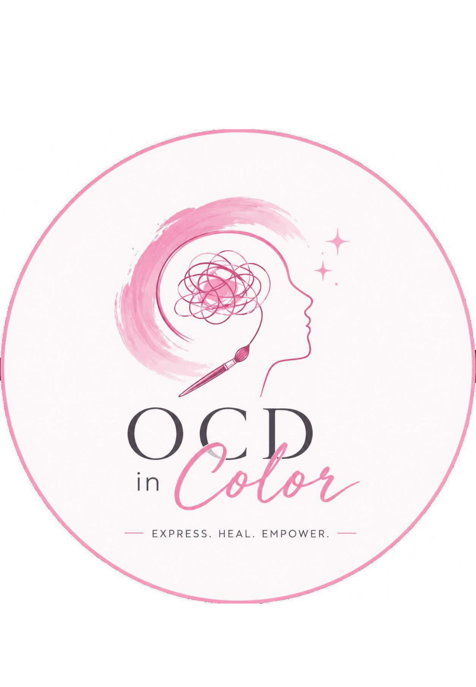
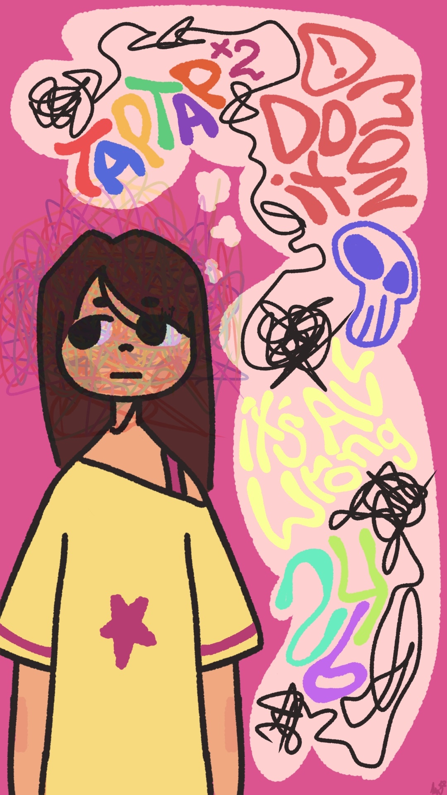
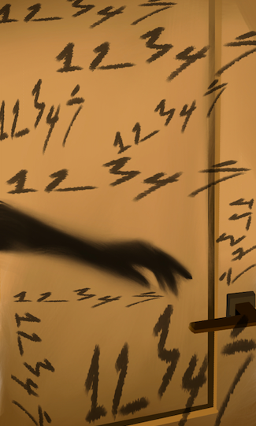
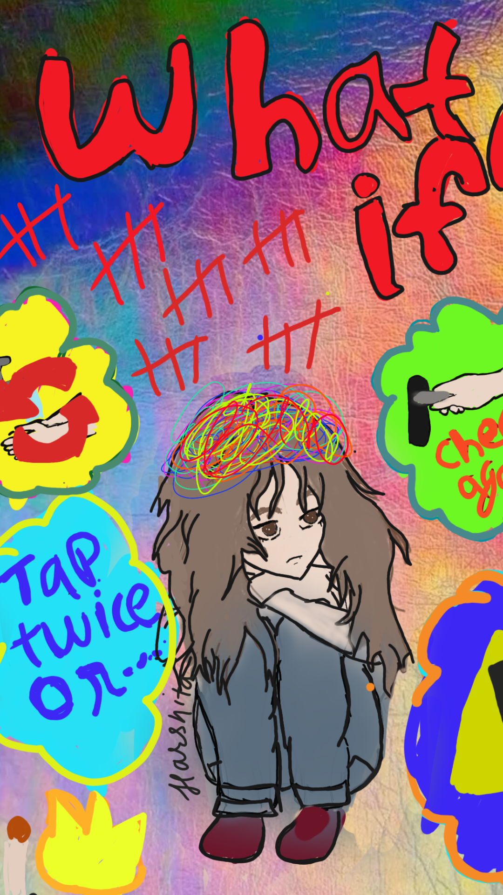
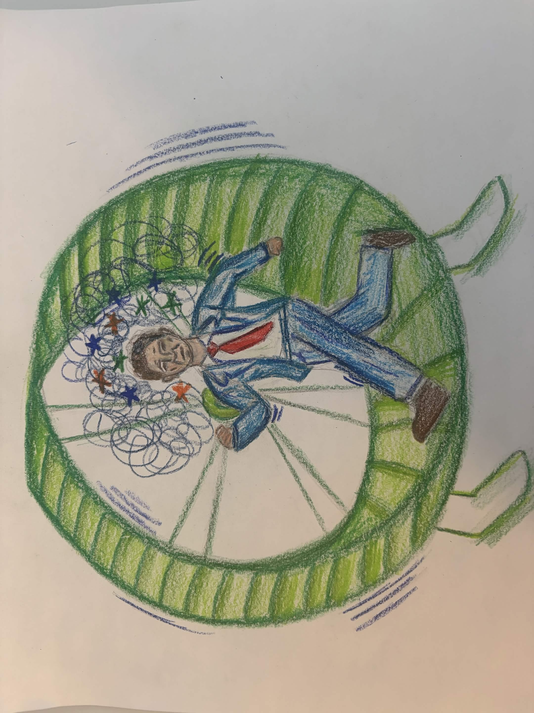
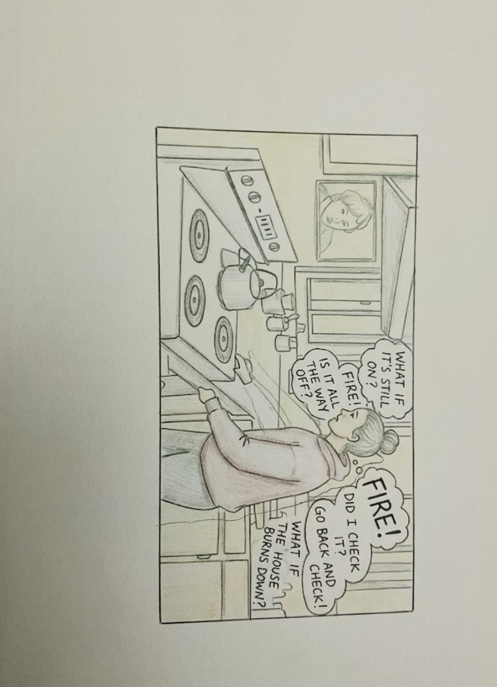
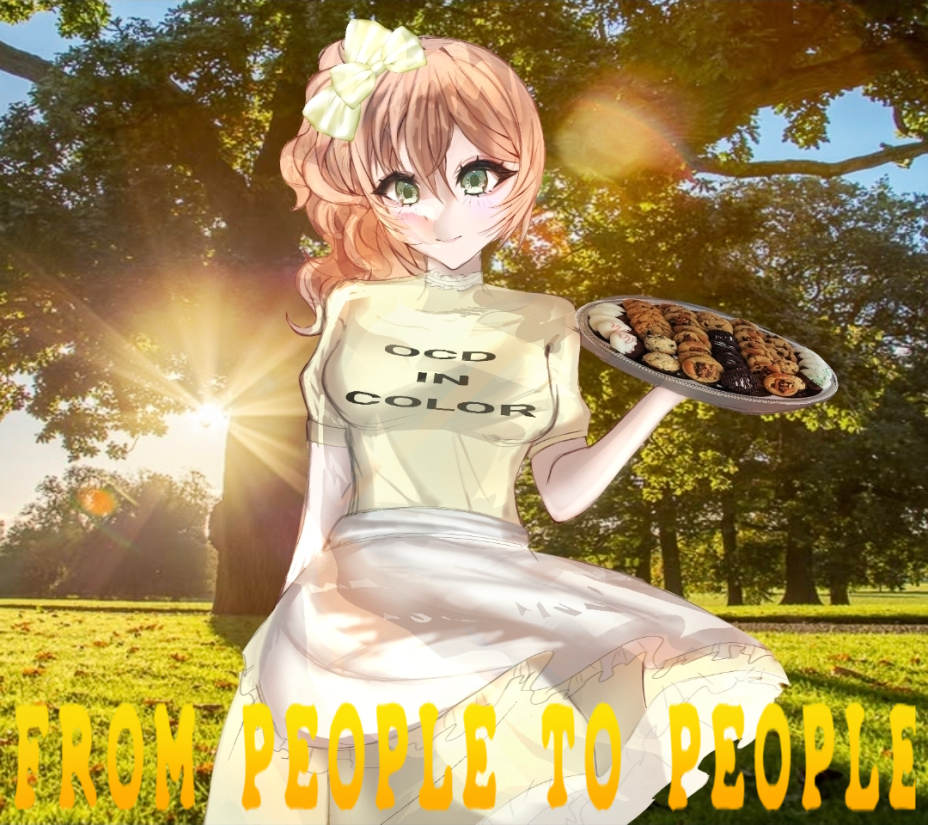
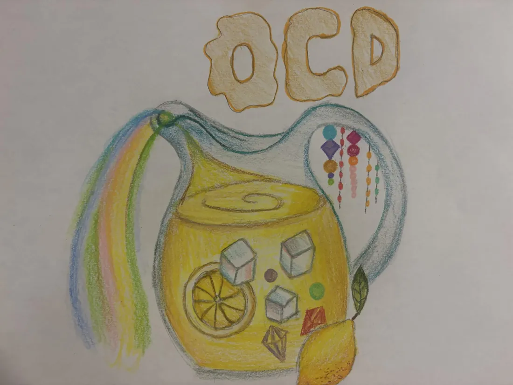
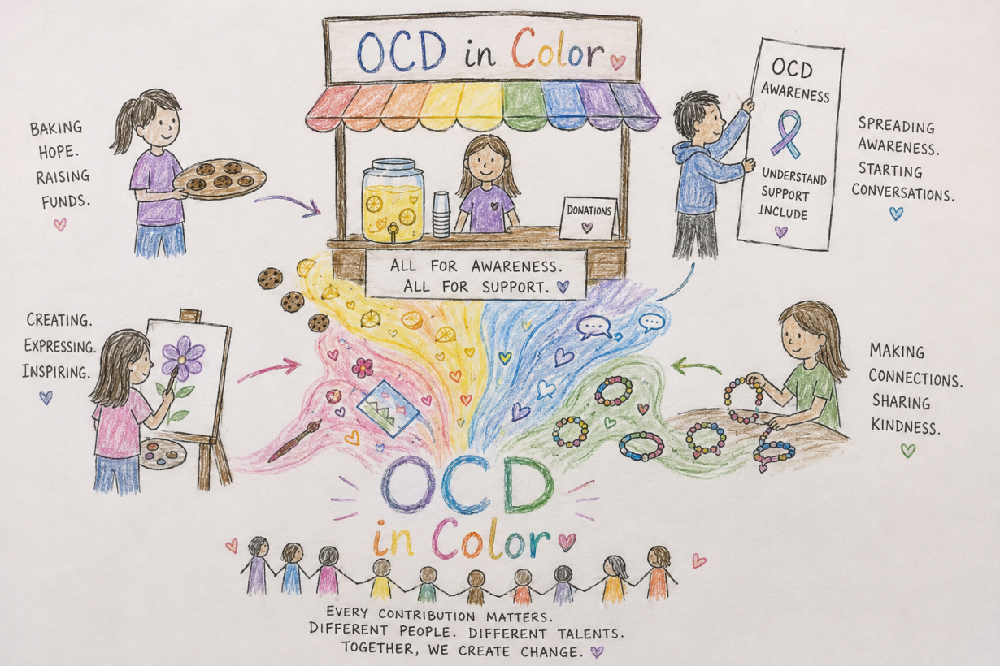
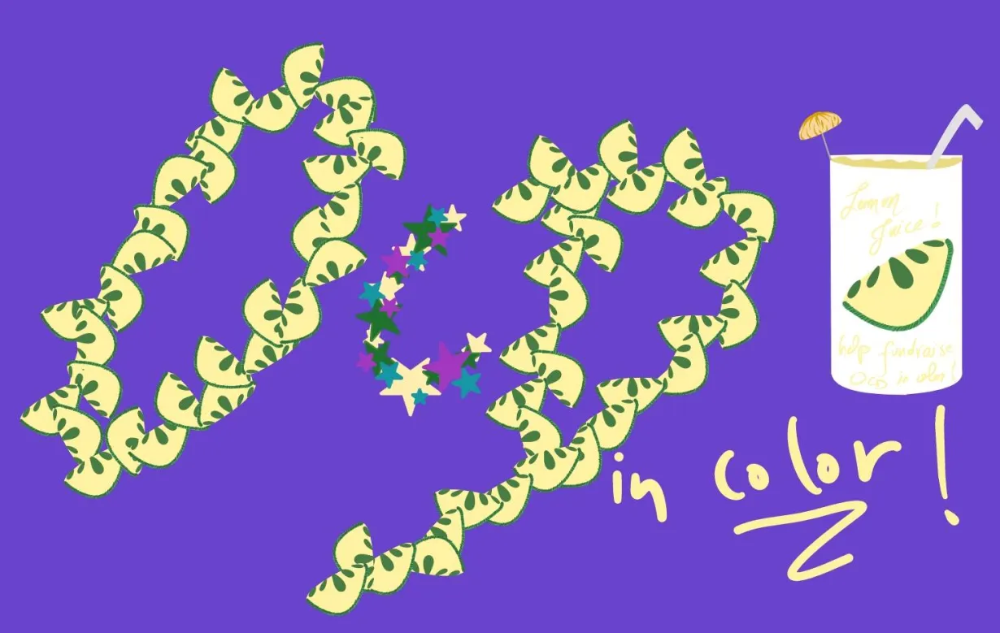

OCD doesn't look
the way you imagine
OCD in Color is a 501(c)(3) registered nonprofit that aims to raise awareness about obsessive-compulsive disorder through art. Moreover, it seeks to improve access to mental health care for individuals with OCD by providing financial assistance for therapy sessions.
Color is the whole point
OCD is often misunderstood and reduced to stereotypes. We believe every experience with OCD is personal and complex. This is why we use art, education and storytelling to make these experiences visible.

Lived experience, rendered visible
Works submitted by community members and commissioned artists exploring what OCD looks like from the inside.

{kind=link}

{kind=link}

{kind=link}

{kind=link}

{kind=link}


{kind=link}

{kind=link}

{kind=link}

{kind=link}

Understanding OCD through science
Our volunteer research Team transforms scientific studies into clear, accessible summaries. Every article is based on published research and includes a link to the original study.
Stories, reflections & resources
Written by our community — people navigating OCD in their own skin, their own language, their own way.
Share your story
Have you lived with OCD? Are you a caregiver, therapist, or advocate? We want to hear from you. Stories are reviewed by our team and published on a rolling basis.
By submitting, you agree to let OCD in Color review and potentially publish your story. We will always contact you before publishing.